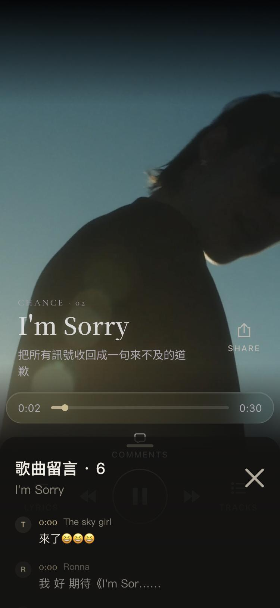
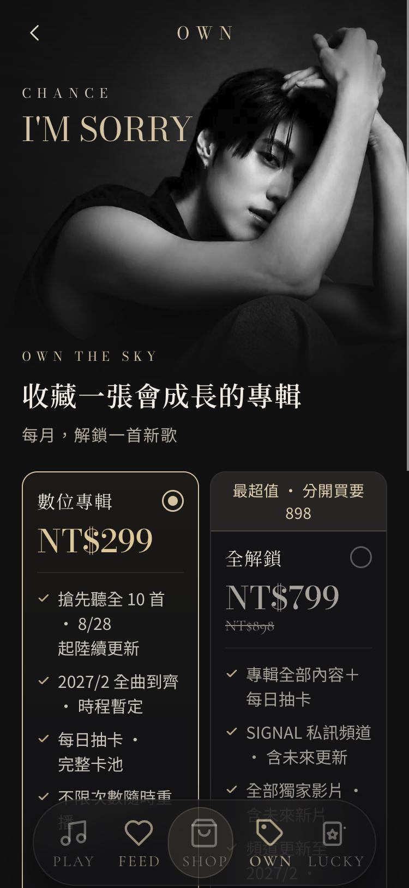
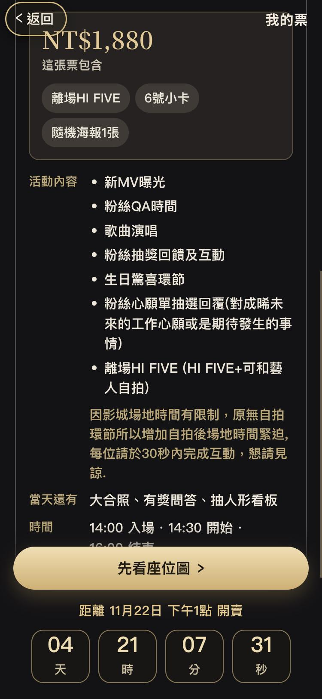
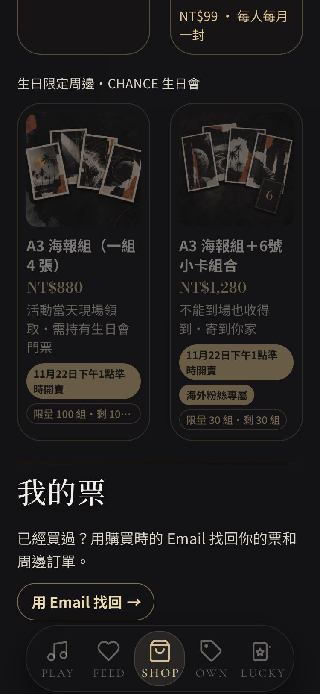
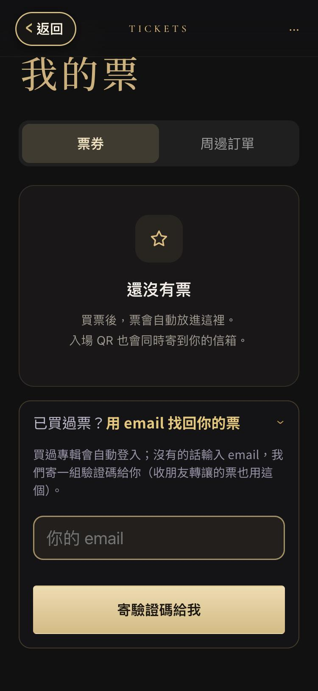

每一則：按「複製這一則」貼到 Threads，再把下面的圖存到相簿一起發。手機長按圖片可以存。
THE SKY App 大更新 🎧 從 B180 一路改到現在的 B585，這一個多月改了 400 多版。 整個 App 換成黑金新樣子，還可以直接在 App 裡買 12/27 生日會的票。 這一串一次整理：新功能＋怎麼用 👇 打開 👉 chance1228.com
① 聽歌 ・打開就從〈I'm Sorry〉開始，還沒買可以先試聽 30 秒 ・歌詞像 Apple Music 一樣，唱到哪一句、亮哪一句 ・TRACKS 可以左右滑換歌 ・底部有迷你播放列，換到別頁也看得到正在播的歌 ・首頁往左滑，可以聽之前的《BEFORE THE SKY》
② 歌曲留言 可以在歌的某一秒留言，播到那裡就會浮出來。 點 COMMENTS，就能看到大家在每一句留了什麼。

下載這張③ SIGNAL 和每日抽卡 ・FEED 變成上下滑的全螢幕樣式，雙擊就按讚 ・Chance 傳新訊息時，上面會跳出「CHANCE 傳了新訊息給你」 ・LUCKY 每天登入送 1 抽，聽完一首歌再 +1 抽，集滿 6 張完成圖鑑 （SIGNAL 私訊頻道要買全解鎖才看得到）
④ 收藏專輯（OWN） ・數位專輯 NT$299：搶先聽全 10 首，陸續更新 ・全解鎖 NT$799：專輯＋SIGNAL 私訊頻道＋獨家影片 ・已經買過：OWN →「已購買？開啟專輯」，輸入 email 和兌換碼 ・中文、英文可以在 OWN 自己切換

下載這張⑤ 12/27 生日會購票教學 11/22（日）下午 1 點開賣｜NT$1,880｜120 席｜對號入座 1. 用 Safari 或 Chrome 打開 chance1228.com（不要在 IG 裡直接開） 2. 開賣前先登入：SHOP →「登入／查票」→ 輸入 email → 收驗證碼 3. 1 點一到：SHOP →「先看座位圖與活動」→ 選座位 4. 選好座位後 10 分鐘內按付款，付款有 5 分鐘 5. 中間座位最搶，被選走就換旁邊 6. 11/22 請用同一個地方打開，就不用重新登入
⑥ 票包含什麼 離場 HI FIVE（可以和成晞自拍）、6 號小卡、隨機海報 1 張 90 分鐘活動：新 MV 曝光、粉絲 QA、歌曲演唱、抽獎互動、生日驚喜、粉絲心願單抽選回覆 因為影城場地時間有限，自拍每位請在 30 秒內完成，懇請見諒 🙏

下載這張⑦ 生日限定周邊 ・A3 海報組 NT$880（限量 100 組）：要有生日會門票才能買，一張票一組；買票時可以一起加購，當天現場領 ・A3 海報組＋6 號小卡 NT$1,280（限量 30 組）：給不能來的海外粉絲，只寄台灣以外 ・海外運費：亞洲 250、其他地區 500

下載這張⑧ 我的票 ・付款完成，票會自動放進 SHOP →「我的票」，入場 QR 也會寄到信箱 ・買多張可以一次出示全部 QR（一個 QR 一個人入場） ・可以轉讓給朋友：按住 1 秒送出 ・換手機：用購買的 email 收驗證碼就能找回 ⑨ 小技巧 ・用 Safari 打開 → 分享 →「加入主畫面」，下次一點就開 ・活動問題：私訊微風國際 IG ・App 技術問題：heartbeats0693@gmail.com 12/27 見 🎂

下載這張